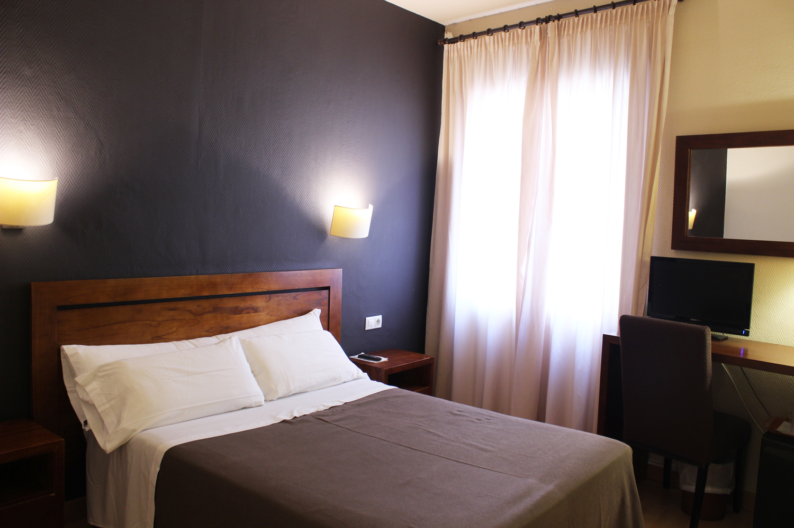
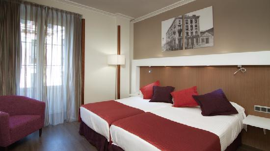
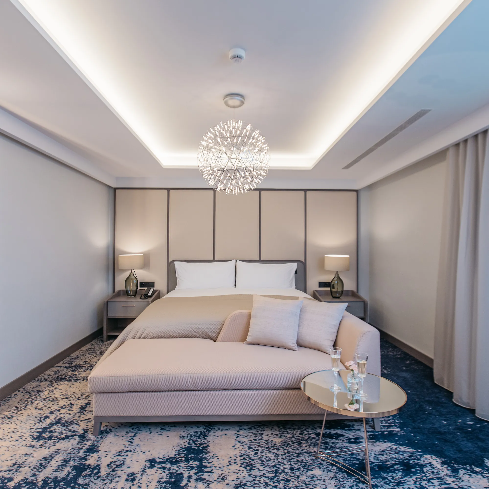
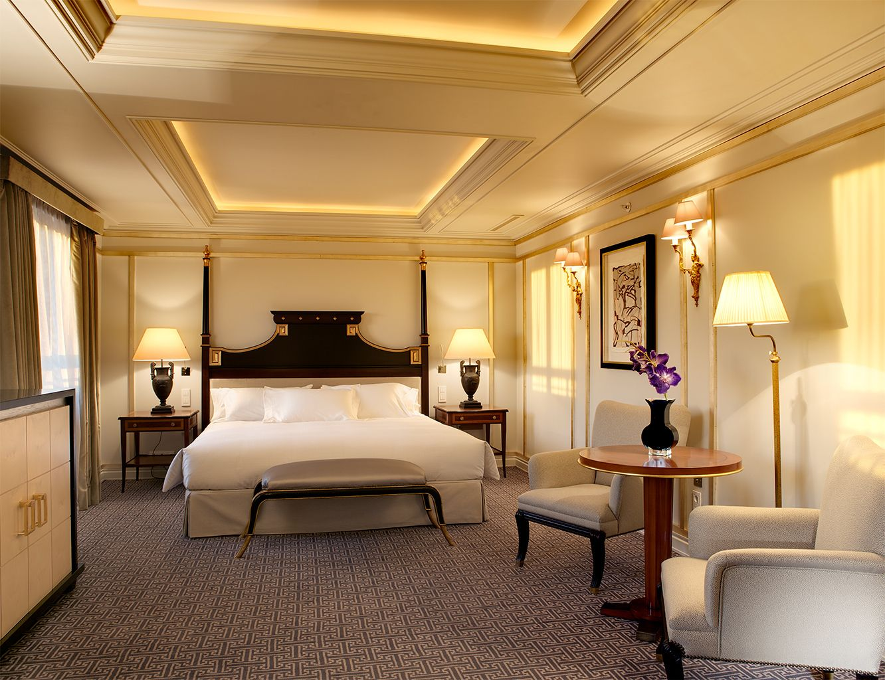

Esta habitación individual es pequeña pero acogedora, con una cama individual, un escritorio y un armario empotrado. La cama está hecha y hay una almohada sobre ella. El escritorio está junto a la cama y hay un ordenador sobre él. La habitación está decorada con un estilo sencillo, con paredes blancas y muebles de madera clara.
Habitación Normal
Habitacion individual
Habitacion Doble
Esta habitación doble es espaciosa y luminosa, con una gran ventana que da a la calle. La cama es doble y está cubierta con un edredón blanco. Hay una silla junto a la cama y una mesa con una lámpara. En la pared hay un cuadro de un paisaje rural.La habitación está decorada en un estilo clásico, con muebles de madera y alfombras de colores suaves. El color predominante es el blanco, que crea una sensación de amplitud y luminosidad.
Habitacion Suite
Habitacion Suite-Presidencial
La habitación está decorada en un estilo clásico y elegante, con paredes blancas, suelos de madera y muebles de caoba. La cama es el elemento central de la habitación, con un cabecero de caoba tallado y un dosel de seda. A los pies de la cama hay una chaise longue de terciopelo rojo, perfecta para relajarse y leer. .
Habitacion Suite-Normal
Esta habitacion suite normal, La cama es grande y está hecha con sábanas blancas y almohadas mullidas. Hay dos sillas a los lados de la cama, una de ellas con una mesita de noche. En la esquina de la habitación hay una mesa con un jarrón de flores.La habitación está decorada con un estilo clásico y elegante. Las paredes están pintadas de un color blanco cremoso y el suelo está cubierto de una alfombra de color beige. La cama tiene un cabecero de madera tallada y las sillas están tapizadas en un tejido de seda.